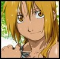

Forums galactiques > Taverne galactique : lieu de discussion informel > les poëtes.....
Trop! | 7 | |
Ouais! | 7 | |
je n'en sais rien! | 4 | |
Boof boof! | 6 | |
Trop nul! | 12 | |
Total : 36 vote(s) | ||
| catherina Réputation à la taverne : 200  01/04 ETU 23:15 | Score : 1 Détails Comme je vois qu'il y a beaucoup de beaux parleurs:
Quelqu'un pourrait il me faire un petit poeme pour le depart de mon armee à la guerre..... Grosse recompense à la clef...Je vous epargnerais dans ma grande compassion... | ||
| Valentino Falciore Réputation à la taverne : 103  01/04 ETU 23:23 | Score : 0 Détails Permettez-moi, chère Catherina, de citer en votre honneur un aphorisme que je tire moi-même d'un grand personnage que vous aurez vite reconnu:
L'art d'être tantôt très audacieux, tantôt très prudent est l'art de réussir. | ||
| Morteur Réputation à la taverne : 22  01/04 ETU 23:27 | Score : 5 Détails Des bruit au milieux de la nuit,
Les soldats de catherina se préparent, A donner la mort ils sont prêts, pour elle, ils vont tout sacrifier, a l'aube, ils se mettent en marche, vers leurs funestes destins ils vont, semant ruine et chaos a leurs passages, ils sont, et resteront, des soldats dévoués à catherina, qu'importe les épreuves, pour elle, ils les franchiront, ainsi avant le mois de mai, catherina et sa grande armée auront gagné, et des terres jadis inconnues seront revenues, voila qui est fait | ||
| roomi Réputation à la taverne : 158  02/04 ETU 00:35 | Score : 3 Détails La Mort
trés loin encore de vous elle pense déjà à vous surement qu'à la fin elle vous vous chassera loin le temps vous est compté misérables etres traqués la guerre vous paraitra surement là ou pas la possibilitée toujours de vous tuez vous meme sans etre battu impuissant corrompu trés loin encore de vous elle pense déjà à vous simplement rapidement à vos portes elle se rend | ||
| Melenda Otori Réputation à la taverne : 34  02/04 ETU 09:29 | Score : 2 Détails -LE-RIEN-
Comment peux t' on arriver si loin sans rien, Sans amis, sans amour, sans rien, Ce vide qui ne peut se remplir de rien, Ce coeur qui ne contient rien, Pour la personne en question, Rien ne peut remplir cet espace, A part l' argent du rien... | ||
| Eliad Gadil Réputation à la taverne : 184  02/04 ETU 09:36 | Score : 5 Détails CAT, je dédis ce poème a toi !!
C'est Cat accompagnée de Spy !! Il vont violer, les vieux et la marmaille !! Les petits jeunes, et même le betail !! C'est Cat accompagnée de Spy !! Il vont faire, une sacrée pagaille !! Avec leurs fidèle alliés !! Qui vont, les aider a violer !! On va, bien s'amuser !! | ||
| lara Réputation à la taverne : 87  05/04 ETU 22:48 | Score : 2 Détails
Le commencement et la fin Enfant, à votre première heure, On vous sourit, et vous pleurez. Puissiez-vous, quand vous partirez, Sourire, alors que l’on vous pleure ! | ||
| lara Réputation à la taverne : 87 12/04 ETU 13:13 | Score : 0 Détails LARA
Comme les bleus transparents Des aurores marginales, Elle a de temps en temps Les yeux d'un animal. Aigu comme un diamant Traversant le cristal, Le regard inquiétant D'un loup de carnaval. Tout ce qu'il y a d'amour Et d'envie qu'on l'enferme, S'est libéré un jour Pour lui donner des cernes. Des volcans sont en elle, Dévorant ses entrailles. Elle est terre, air et ciel Tendresse et représailles. Comme l'appel des rivières Dans un désert salé, Elle a les yeux si clairs Qu'on voudrait s'y noyer. Elle a des yeux si purs Qu'on lit a livre ouvert Ses romans d'aventure Et ses récits de guerre. Comme les rouges déclinants Des lueurs occidentales, Elle a de temps en temps Les yeux d'un animal. Farouche et résigné, Insolent et soumis, A l'instant de griffer Elle a ouvert son lit. Elle est sortie armée Du cerveau d'un démon, On ne sait quelle année Au fond de quel bas-fond. Les yeux encore brillants De tourments prophétiques, La marque dans le sang Des délires sabbatiques. Au fil des longs sommeils, Elle pleure tout en douceur Et le premier soleil La sort des profondeurs. Son regard surprenant Pénètre comme un glaive Pendant que des torrents S'échappent de ses rêves. C'est un miroir sans tain Où l'on découvre tout, Des pitreries du nain Jusqu'au fou-rire du fou. Un gouffre satiné, Une fosse aux serpents, Un puits de vérité Ou peut-être un néant. Amour extravagant, Fascination du mal, Elle a de temps en temps Les yeux d'un animal. Amoureux d'une chienne Ou méprisante d'un chat, Ni l'amour, ni la haine Ne se feront sans moi. spéciale dédicace... | ||
| Gorgutz Réputation à la taverne : 119  12/04 ETU 22:35 | Score : 1 Détails ''Si t'veux être un vrai bulldozer,
Si t'veux ét gros et bien vert, Si t'veux k'le boulot soit vitfai, Le votours cé lé plus parfai!'' Chant de décollage des Votours de Gorgutz | ||
| Nasguhl Réputation à la taverne : 0  13/04 ETU 16:55 | Score : 1 Détails La mort et la mourt non rien en commun
Mais moi Je t'aime en mourir Nasguhl |
Forums galactiques > Taverne galactique : lieu de discussion informel > les poëtes.....